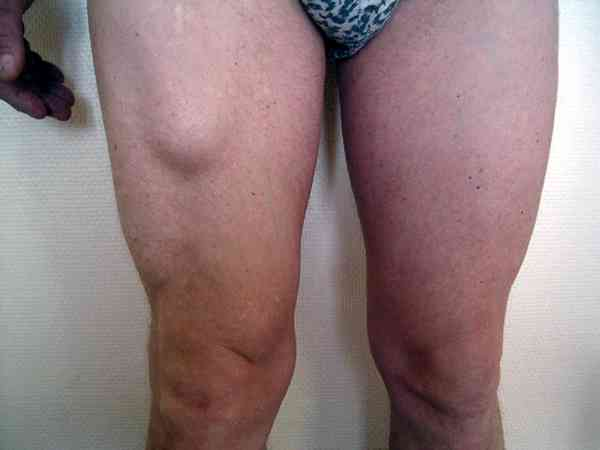
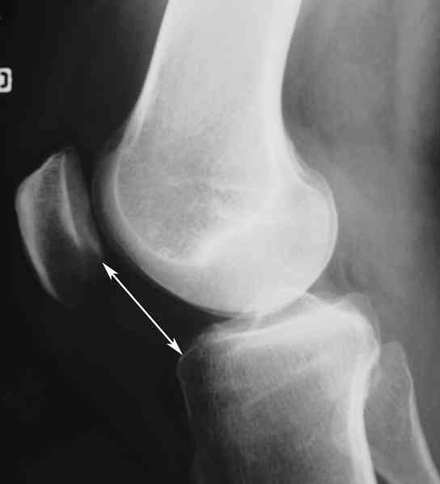
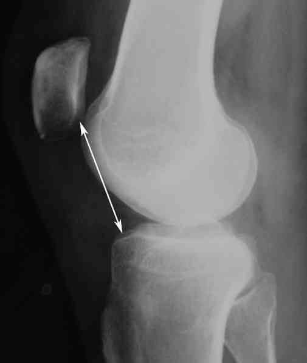
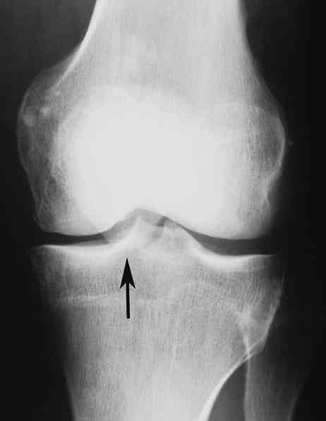
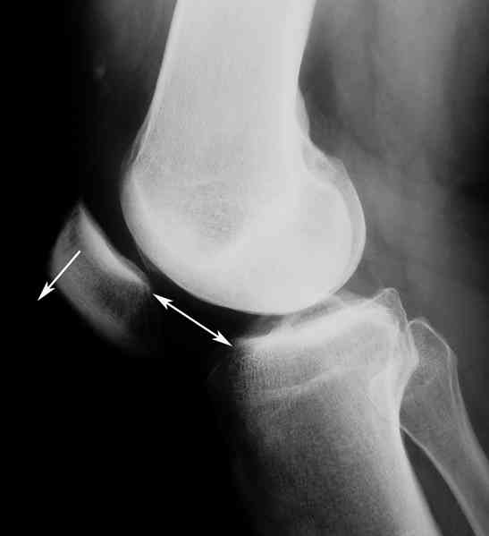

Bienvenue Sur Medical Education
Lésions tendineuses du membre inférieur
Spécialité : traumatologie /
Points importants
CUISSE
-
Le plus souvent, lésions musculaires pour lesquelles le traitement chirurgical est exceptionnel (cf. lésions musculaires)
-
Les rares indications opératoires sont représentées par les avulsions tendineuses :
-
des ischio-jambiers au niveau de la tubérosité ischiatique
-
du droit antérieur au niveau de son insertion basse sur le tendon du muscle crural
- des ischio-jambiers au niveau de la tubérosité ischiatique
- du droit antérieur au niveau de son insertion basse sur le tendon du muscle crural
 _365 Photo Avulsion du droit antérieur au niveau de son insertion distale
- Malheureusement le diagnostic est rarement fait en urgence et le chirurgien doit souvent agir au stade des séquelles
GENOU
- Soit rupture du ligament rotulien
- Soit rupture-avulsion du tendon du quadriceps au niveau de son insertion sur le bord supérieur de la rotule
JAMBE
Tennis-leg
- Avulsion du jumeau interne (gastrocnémien médial) au niveau de son insertion basse sur le soléaire
- Plusieurs stades de gravité suivant qu'il s'agit d'une désinsertion partielle (cas le plus fréquent), ou totale
Rupture du tendon d'Achille (tendon calcanéen)
- La rupture partielle n'existe pas (sauf preuve du contraire)
-
L'échographie est un examen dangereux qui induit systématiquement en erreur le clinicien car le diagnostic habituel est celui de rupture partielle
Présentation clinique / CIMU
CUISSE
-
Douleur bipolaire (au niveau du muscle lui-même et au niveau de son insertion ce qui n'est pas habituel et doit attirer l'attention)
-
Impotence fonctionnelle importante
-
Le diagnostic est plus facile en urgence qu'au bout de quelques heures (oedème +++) d'où l'intérêt d'y penser systématiquement
GENOU
Habituellement évident
- Le blessé a perçu un claquement au cours d'un effort d'impulsion plus ou moins brutal,
- Suivi d'une impotence fonctionnelle plus ou moins totale,
- Impossibilité d'étendre le genou en contractant le quadriceps (absence de verrouillage du genou)
Examen clinique, il retrouve
- En cas de rupture du quadriceps, un « trou » au bord supérieur de la rotule
- En cas de rupture du ligament rotulien, une douleur et « un trou » sous la rotule
JAMBE
Tennis-leg
-
Le diagnostic est relativement facile devant :
- un patient qui a présenté une douleur brutale du mollet à la suite d'un claquement (a l'impression qu'on lui a lancé une pierre ou qu'on lui a tiré dessus avec une arme à feu) au moment d'une impulsion brutale
- une impotence fonctionnelle modérée
-
A l'examen clinique, on retrouve :
- une douleur exquise au niveau du jumeau interne
- parfois « un trou » parfaitement perceptible à la palpation
- parfois une ascension du jumeau interne en comparant avec le côté opposé
Rupture du tendon d'Achille (tendon calcanéen)
-
Le diagnostic est clinique devant :
- un patient qui présente une impotence fonctionnelle relative (arrive à marcher)
- à la suite d'un claquement et d'une douleur située à la partie basse du mollet
-
L'examen est fondamental, il retrouve chez un patient installé à plat ventre :
- un trou à la palpation du tendon d'Achille
- une chute du pied par perte du tonus du mollet
- un signe de Thompson positif (+++) ce qui signe la rupture totale du tendon ; si l'on pince le mollet entre le pouce et les autres doigts, on constate du côté non lésé, une flexion plantaire du pied alors que du côté lésé, le pied ne bouge absolument pas
-
une diminution considérable de la force de flexion plantaire avec impossibilité de marcher sur la pointe du pied
Signes paracliniques
CUISSE
-
L'échographie doit explorer tout le muscle depuis son insertion jusqu'à la « boule », témoin de sa rétraction, et non pas constater la présence d'un hématome
-
L'IRM paraît beaucoup plus intéressante pour explorer la totalité du muscle
GENOU
-
Les radiographies standard (+++) de face et de profil retrouvent en cas de :
-
rupture du ligament rotulien, une rotule haute dont la hauteur doit être comparée avec le côté opposé
-
rupture-avulsion du quadriceps, une rotule basse dont le pôle supérieur est basculé vers l'avant
- rupture du ligament rotulien, une rotule haute dont la hauteur doit être comparée avec le côté opposé
- rupture-avulsion du quadriceps, une rotule basse dont le pôle supérieur est basculé vers l'avant
 _366 Photo Comparaison des hauteurs des rotules
 _367 Photo Hauteur de rotule anormalement élevée en comparaison avec le genou contro-latéral
 _368 Photo Hauteur de rotule anormalement basse
 _369 Photo Hauteur de rotule anormalement basse de profil
- L'échographie est inutile de même que l'IRM
JAMBE
Tennis-leg
- L'échographie est souvent décevante car, si elle montre habituellement une déchirure ou un hématome, elle ne permet pas de faire le diagnostic d'avulsion et d'ascension du jumeau
- L'IRM nous paraît plus performante surtout si elle est réalisée de manière comparative avec et sans contraction du triceps
Rupture du tendon d'Achille (tendon calcanéen)
- La radiographie simple est inutile
-
L'échographie est inutile et dangereuse
Traitement
CUISSE
-
Les rares indications opératoires sont représentées par les avulsions tendineuses :
-
des ischio-jambiers au niveau de la tubérosité ischiatique
-
du droit antérieur au niveau de son insertion basse sur le tendon du muscle crural
- des ischio-jambiers au niveau de la tubérosité ischiatique
- du droit antérieur au niveau de son insertion basse sur le tendon du muscle crural
_365 Photo Avulsion du droit antérieur au niveau de son insertion distale
- Si le diagnostic est posé en urgence (dans la semaine qui suit le traumatisme) une intervention doit être programmée pour réinsérer le tendon
- Antlagique ± AINS
GENOU
- Le traitement est chirurgical dans tous les cas
- Antalgiques IV
- A jeun
JAMBE
Tennis-leg
- En cas de lésion partielle, il faut se contenter d'un traitement orthopédique avec, de préférence, une immobilisation rigide pour 30 à 45 jours (botte de marche, la décharge étant inutile). Ceci évite les ruptures itératives qui ne sont pas rares
- En cas d'ascension du jumeau interne, il est préférable de proposer un traitement chirurgical, car les séquelles sont très difficiles à traiter
Rupture du tendon d'Achille (tendon calcanéen)
- Le traitement est habituellement chirurgical sauf contre-indication d'ordre médical (patient âgé, polypathologique, sous anticoagulants etc.)
-
Dans ce dernier cas, il est souhaitable de faire une botte plâtrée en équin
Devenir / orientation
-
Voir traitement
ORDONNANCE DE SORTIE
-
Antalgique ± AINS
-
RICE
-
Si trop algique, décharge avec cannes anglaises (+ HBPM dans ce cas)
Bibliographie
-
Traumatologie à l'usage de l'urgentiste. Sous la direction de Dominique Saragaglia. Editions Sauramps Médical. 2004
Bibliographie
-
Traumatologie à l'usage de l'urgentiste. Sous la direction de Dominique Saragaglia. Editions Sauramps Médical. 2004
Auteur(s) : Jean-Jacques BANIHACHEMI, Dominique SARAGAGLIA